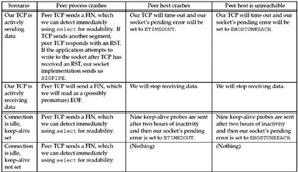
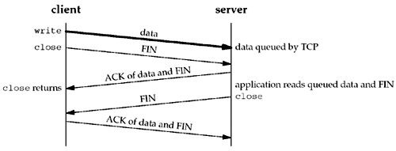
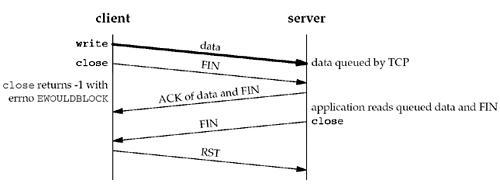
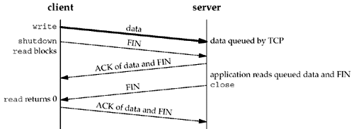
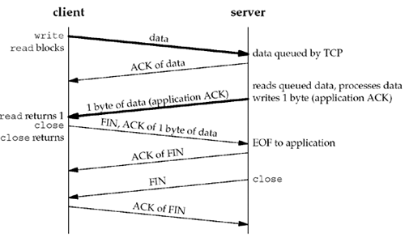
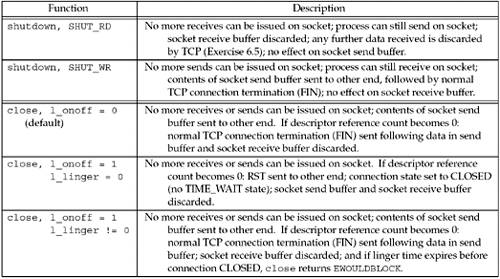
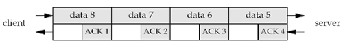

| [ Team LiB ] |
|
7.5 Generic Socket OptionsWe start with a discussion of the generic socket options. These options are protocol-independent (that is, they are handled by the protocol-independent code within the kernel, not by one particular protocol module such as IPv4), but some of the options apply to only certain types of sockets. For example, even though the SO_BROADCAST socket option is called "generic," it applies only to datagram sockets. SO_BROADCAST Socket OptionThis option enables or disables the ability of the process to send broadcast messages. Broadcasting is supported for only datagram sockets and only on networks that support the concept of a broadcast message (e.g., Ethernet, token ring, etc.). You cannot broadcast on a point-to-point link or any connection-based transport protocol such as SCTP or TCP. We will talk more about broadcasting in Chapter 20. Since an application must set this socket option before sending a broadcast datagram, it prevents a process from sending a broadcast when the application was never designed to broadcast. For example, a UDP application might take the destination IP address as a command-line argument, but the application never intended for a user to type in a broadcast address. Rather than forcing the application to try to determine if a given address is a broadcast address or not, the test is in the kernel: If the destination address is a broadcast address and this socket option is not set, EACCES is returned (p. 233 of TCPv2). SO_DEBUG Socket OptionThis option is supported only by TCP. When enabled for a TCP socket, the kernel keeps track of detailed information about all the packets sent or received by TCP for the socket. These are kept in a circular buffer within the kernel that can be examined with the trpt program. Pages 916–920 of TCPv2 provide additional details and an example that uses this option. SO_DONTROUTE Socket OptionThis option specifies that outgoing packets are to bypass the normal routing mechanisms of the underlying protocol. For example, with IPv4, the packet is directed to the appropriate local interface, as specified by the network and subnet portions of the destination address. If the local interface cannot be determined from the destination address (e.g., the destination is not on the other end of a point-to-point link, or is not on a shared network), ENETUNREACH is returned. The equivalent of this option can also be applied to individual datagrams using the MSG_DONTROUTE flag with the send, sendto, or sendmsg functions. This option is often used by routing daemons (e.g., routed and gated) to bypass the routing table and force a packet to be sent out a particular interface. SO_ERROR Socket OptionWhen an error occurs on a socket, the protocol module in a Berkeley-derived kernel sets a variable named so_error for that socket to one of the standard Unix Exxx values. This is called the pending error for the socket. The process can be immediately notified of the error in one of two ways:
The process can then obtain the value of so_error by fetching the SO_ERROR socket option. The integer value returned by getsockopt is the pending error for the socket. The value of so_error is then reset to 0 by the kernel (p. 547 of TCPv2). If so_error is nonzero when the process calls read and there is no data to return, read returns–1 with errno set to the value of so_error (p. 516 of TCPv2). The value of so_error is then reset to 0. If there is data queued for the socket, that data is returned by read instead of the error condition. If so_error is nonzero when the process calls write, –1 is returned with errno set to the value of so_error (p. 495 of TCPv2) and so_error is reset to 0.
This is the first socket option that we have encountered that can be fetched but cannot be set. SO_KEEPALIVE Socket OptionWhen the keep-alive option is set for a TCP socket and no data has been exchanged across the socket in either direction for two hours, TCP automatically sends a keep-alive probe to the peer. This probe is a TCP segment to which the peer must respond. One of three scenarios results:
Chapter 23 of TCPv1 and pp. 828–831 of TCPv2 contain additional details on the keep-alive option. Undoubtedly the most common question regarding this option is whether the timing parameters can be modified (usually to reduce the two-hour period of inactivity to some shorter value). Appendix E of TCPv1 discusses how to change these timing parameters for various kernels, but be aware that most kernels maintain these parameters on a per-kernel basis, not on a per-socket basis, so changing the inactivity period from 2 hours to 15 minutes, for example, will affect all sockets on the host that enable this option. However, such questions usually result from a misunderstanding of the purpose of this option. The purpose of this option is to detect if the peer host crashes or becomes unreachable (e.g., dial-up modem connection drops, power fails, etc.). If the peer process crashes, its TCP will send a FIN across the connection, which we can easily detect with select. (This was why we used select in Section 6.4.) Also realize that if there is no response to any of the keep-alive probes (scenario 3), we are not guaranteed that the peer host has crashed, and TCP may well terminate a valid connection. It could be that some intermediate router has crashed for 15 minutes, and that period of time just happens to completely overlap our host's 11-minute and 15-second keep-alive probe period. In fact, this function might more properly be called "make-dead" rather than "keep-alive" since it can terminate live connections. This option is normally used by servers, although clients can also use the option. Servers use the option because they spend most of their time blocked waiting for input across the TCP connection, that is, waiting for a client request. But if the client host's connection drops, is powered off, or crashes, the server process will never know about it, and the server will continually wait for input that can never arrive. This is called a half-open connection. The keep-alive option will detect these half-open connections and terminate them. Some servers, notably FTP servers, provide an application timeout, often on the order of minutes. This is done by the application itself, normally around a call to read, reading the next client command. This timeout does not involve this socket option. This is often a better method of eliminating connections to missing clients, since the application has complete control if it implements the timeout itself.
Figure 7.6 summarizes the various methods that we have to detect when something happens on the other end of a TCP connection. When we say "using select for readability," we mean calling select to test whether a socket is readable. Figure 7.6. Ways to detect various TCP conditions. SO_LINGER Socket OptionThis option specifies how the close function operates for a connection-oriented protocol (e.g., for TCP and SCTP, but not for UDP). By default, close returns immediately, but if there is any data still remaining in the socket send buffer, the system will try to deliver the data to the peer. The SO_LINGER socket option lets us change this default. This option requires the following structure to be passed between the user process and the kernel. It is defined by including <sys/socket.h>.
struct linger {
int l_onoff; /* 0=off, nonzero=on */
int l_linger; /* linger time, POSIX specifies units as seconds */
};
Calling setsockopt leads to one of the following three scenarios, depending on the values of the two structure members:
We now need to see exactly when a close on a socket returns given the various scenarios we looked at. We assume that the client writes data to the socket and then calls close. Figure 7.7 shows the default situation. Figure 7.7. Default operation of close: it returns immediately.
We assume that when the client's data arrives, the server is temporarily busy, so the data is added to the socket receive buffer by its TCP. Similarly, the next segment, the client's FIN, is also added to the socket receive buffer (in whatever manner the implementation records that a FIN has been received on the connection). But by default, the client's close returns immediately. As we show in this scenario, the client's close can return before the server reads the remaining data in its socket receive buffer. Therefore, it is possible for the server host to crash before the server application reads this remaining data, and the client application will never know. The client can set the SO_LINGER socket option, specifying some positive linger time. When this occurs, the client's close does not return until all the client's data and its FIN have been acknowledged by the server TCP. We show this in Figure 7.8. Figure 7.8. close with SO_LINGER socket option set and l_linger a positive value. But we still have the same problem as in Figure 7.7: The server host can crash before the server application reads its remaining data, and the client application will never know. Worse, Figure 7.9 shows what can happen when the SO_LINGER option is set to a value that is too low. Figure 7.9. close with SO_LINGER socket option set and l_linger a small positive value. The basic principle here is that a successful return from close, with the SO_LINGER socket option set, only tells us that the data we sent (and our FIN) have been acknowledged by the peer TCP. This does not tell us whether the peer application has read the data. If we do not set the SO_LINGER socket option, we do not know whether the peer TCP has acknowledged the data. One way for the client to know that the server has read its data is to call shutdown (with a second argument of SHUT_WR) instead of close and wait for the peer to close its end of the connection. We show this scenario in Figure 7.10. Figure 7.10. Using shutdown to know that peer has received our data. Comparing this figure to Figures 7.7 and 7.8 we see that when we close our end of the connection, depending on the function called (close or shutdown) and whether the SO_LINGER socket option is set, the return can occur at three different times:
Another way to know that the peer application has read our data is to use an application-level acknowledgment, or application ACK. For example, in the following, the client sends its data to the server and then calls read for one byte of data: char ack; Write(sockfd, data, nbytes); /* data from client to server */ n = Read(sockfd, &ack, 1); /* wait for application-level ACK */ The server reads the data from the client and then sends back the one-byte application-level ACK:
nbytes = Read(sockfd, buff, sizeof(buff)); /* data from client */
/* server verifies it received correct
amount of data from client */
Write(sockfd, "", 1); /* server's ACK back to client */
We are guaranteed that when the read in the client returns, the server process has read the data we sent. (This assumes that either the server knows how much data the client is sending, or there is some application-defined end-of-record marker, which we do not show here.) Here, the application-level ACK is a byte of 0, but the contents of this byte could be used to signal other conditions from the server to the client. Figure 7.11 shows the possible packet exchange. Figure 7.11. Application ACK. Figure 7.12 summarizes the two possible calls to shutdown and the three possible calls to close, and the effect on a TCP socket. Figure 7.12. Summary of shutdown and SO_LINGER scenarios. SO_OOBINLINE Socket OptionWhen this option is set, out-of-band data will be placed in the normal input queue (i.e., inline). When this occurs, the MSG_OOB flag to the receive functions cannot be used to read the out-of-band data. We will discuss out-of-band data in more detail in Chapter 24. SO_RCVBUF and SO_SNDBUF Socket OptionsEvery socket has a send buffer and a receive buffer. We described the operation of the send buffers with TCP, UDP, and SCTP in Figures 2.15, 2.16, and 2.17. The receive buffers are used by TCP, UDP, and SCTP to hold received data until it is read by the application. With TCP, the available room in the socket receive buffer limits the window that TCP can advertise to the other end. The TCP socket receive buffer cannot overflow because the peer is not allowed to send data beyond the advertised window. This is TCP's flow control, and if the peer ignores the advertised window and sends data beyond the window, the receiving TCP discards it. With UDP, however, when a datagram arrives that will not fit in the socket receive buffer, that datagram is discarded. Recall that UDP has no flow control: It is easy for a fast sender to overwhelm a slower receiver, causing datagrams to be discarded by the receiver's UDP, as we will show in Section 8.13. In fact, a fast sender can overwhelm its own network interface, causing datagrams to be discarded by the sender itself. These two socket options let us change the default sizes. The default values differ widely between implementations. Older Berkeley-derived implementations would default the TCP send and receive buffers to 4,096 bytes, but newer systems use larger values, anywhere from 8,192 to 61,440 bytes. The UDP send buffer size often defaults to a value around 9,000 bytes if the host supports NFS, and the UDP receive buffer size often defaults to a value around 40,000 bytes. When setting the size of the TCP socket receive buffer, the ordering of the function calls is important. This is because of TCP's window scale option (Section 2.6), which is exchanged with the peer on the SYN segments when the connection is established. For a client, this means the SO_RCVBUF socket option must be set before calling connect. For a server, this means the socket option must be set for the listening socket before calling listen. Setting this option for the connected socket will have no effect whatsoever on the possible window scale option because accept does not return with the connected socket until TCP's three-way handshake is complete. That is why this option must be set for the listening socket. (The sizes of the socket buffers are always inherited from the listening socket by the newly created connected socket: pp. 462–463 of TCPv2.) The TCP socket buffer sizes should be at least four times the MSS for the connection. If we are dealing with unidirectional data transfer, such as a file transfer in one direction, when we say "socket buffer sizes," we mean the socket send buffer size on the sending host and the socket receive buffer size on the receiving host. For bidirectional data transfer, we mean both socket buffer sizes on the sender and both socket buffer sizes on the receiver. With typical default buffer sizes of 8,192 bytes or larger, and a typical MSS of 512 or 1,460, this requirement is normally met.
To avoid wasting potential buffer space, the TCP socket buffer sizes should also be an even multiple of the MSS for the connection. Some implementations handle this detail for the application, rounding up the socket buffer size after the connection is established (p. 902 of TCPv2). This is another reason to set these two socket options before establishing a connection. For example, using the default 4.4BSD size of 8,192 and assuming an Ethernet with an MSS of 1,460, both socket buffers are rounded up to 8,760 (6 x 1,460) when the connection is established. This is not a crucial requirement; the additional space in the socket buffer above the multiple of the MSS is simply unused. Another consideration in setting the socket buffer sizes deals with performance. Figure 7.13 shows a TCP connection between two endpoints (which we call a pipe) with a capacity of eight segments. Figure 7.13. TCP connection (pipe) with a capacity of eight segments. We show four data segments on the top and four ACKs on the bottom. Even though there are only four segments of data in the pipe, the client must have a send buffer capacity of at least eight segments, because the client TCP must keep a copy of each segment until the ACK is received from the server.
What is important to understand is the concept of the full-duplex pipe, its capacity, and how that relates to the socket buffer sizes on both ends of the connection. The capacity of the pipe is called the bandwidth-delay product and we calculate this by multiplying the bandwidth (in bits/sec) times the RTT (in seconds), converting the result from bits to bytes. The RTT is easily measured with the ping program. The bandwidth is the value corresponding to the slowest link between two endpoints and must somehow be known. For example, a T1 line (1,536,000 bits/sec) with an RTT of 60 ms gives a bandwidth-delay product of 11,520 bytes. If the socket buffer sizes are less than this, the pipe will not stay full, and the performance will be less than expected. Large socket buffers are required when the bandwidth gets larger (e.g., T3 lines at 45 Mbits/sec) or when the RTT gets large (e.g., satellite links with an RTT around 500 ms). When the bandwidth-delay product exceeds TCP's maximum normal window size (65,535 bytes), both endpoints also need the TCP long fat pipe options that we mentioned in Section 2.6.
SO_RCVLOWAT and SO_SNDLOWAT Socket OptionsEvery socket also has a receive low-water mark and a send low-water mark. These are used by the select function, as we described in Section 6.3. These two socket options, SO_RCVLOWAT and SO_SNDLOWAT, let us change these two low-water marks. The receive low-water mark is the amount of data that must be in the socket receive buffer for select to return "readable." It defaults to 1 for TCP, UDP, and SCTP sockets. The send low-water mark is the amount of available space that must exist in the socket send buffer for select to return "writable." This low-water mark normally defaults to 2,048 for TCP sockets. With UDP, the low-water mark is used, as we described in Section 6.3, but since the number of bytes of available space in the send buffer for a UDP socket never changes (since UDP does not keep a copy of the datagrams sent by the application), as long as the UDP socket send buffer size is greater than the socket's low-water mark, the UDP socket is always writable. Recall from Figure 2.16 that UDP does not have a send buffer; it has only a send buffer size. SO_RCVTIMEO and SO_SNDTIMEO Socket OptionsThese two socket options allow us to place a timeout on socket receives and sends. Notice that the argument to the two sockopt functions is a pointer to a timeval structure, the same one used with select (Section 6.3). This lets us specify the timeouts in seconds and microseconds. We disable a timeout by setting its value to 0 seconds and 0 microseconds. Both timeouts are disabled by default. The receive timeout affects the five input functions: read, readv, recdv, recvfrom, and recvmsg. The send timeout affects the five output functions: write, writev, send, sendto, and sendmsg. We will talk more about socket timeouts in Section 14.2.
SO_REUSEADDR and SO_REUSEPORT Socket OptionsThe SO_REUSEADDR socket option serves four different purposes:
Exercises 7.5 and 7.6 show some examples of this socket option. 4.4BSD introduced the SO_REUSEPORT socket option when support for multicasting was added. Instead of overloading SO_REUSEADDR with the desired multicast semantics that allow completely duplicate bindings, this new socket option was introduced with the following semantics:
The problem with this socket option is that not all systems support it, and on those that do not support the option but do support multicasting, SO_REUSEADDR is used instead of SO_REUSEPORT to allow completely duplicate bindings when it makes sense (i.e., a UDP server that can be run multiple times on the same host at the same time and that expects to receive either broadcast or multicast datagrams). We can summarize our discussion of these socket options with the following recommendations:
Chapter 22 of TCPv2 talks about these two socket options in more detail. There is a potential security problem with SO_REUSEADDR. If a socket exists that is bound to, say, the wildcard address and port 5555, if we specify SO_REUSEADDR, we can bind that same port to a different IP address, say the primary IP address of the host. Any future datagrams that arrive destined to port 5555 and the IP address that we bound to our socket are delivered to our socket, not to the other socket bound to the wildcard address. These could be TCP SYN segments, SCTP INIT chunks, or UDP datagrams. (Exercises 11.9 shows this feature with UDP.) For most well-known services, HTTP, FTP, and Telnet, for example, this is not a problem because these servers all bind a reserved port. Hence, any process that comes along later and tries to bind a more specific instance of that port (i.e., steal the port) requires superuser privileges. NFS, however, can be a problem since its normal port (2049) is not reserved.
SO_TYPE Socket OptionThis option returns the socket type. The integer value returned is a value such as SOCK_STREAM or SOCK_DGRAM. This option is typically used by a process that inherits a socket when it is started. SO_USELOOPBACK Socket OptionThis option applies only to sockets in the routing domain (AF_ROUTE). This option defaults to ON for these sockets (the only one of the SO_xxx socket options that defaults to ON instead of OFF). When this option is enabled, the socket receives a copy of everything sent on the socket.
|
| [ Team LiB ] |
|